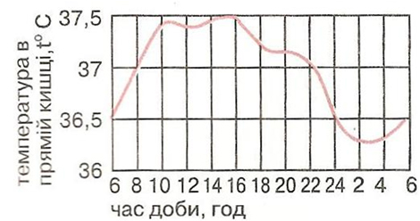

Теплові процеси в тілі людини. Терморегуляція людського організму
Тепловий стан тіл. Теплообмін
Упродовж життя ми часто спостерігаємо явища і процеси, пов’язані з передаванням теплоти, обміном тепловою енергією. Вони відбуваються по-різному: завдяки безпосередньому контакту більш нагрітих тіл з менш нагрітими, внаслідок змішування рідких та газоподібних тіл, отримання теплової енергії під час згоряння палива тощо. З багатовікового досвіду пізнання світу людство усвідомило закономірності перебігу теплових явищ і процесів, узагальнивши їх у вигляді понять, законів, теорій теплоти.
Для визначення теплового стану тіл людина спочатку послуговувалась своїми відчуттями, вживаючи такі слова, як холодне, гаряче, тепле. Наприклад, ми кажемо холодний лід, гарячий пісок, тепла вода тощо. Проте оцінити його таким чином можна лише приблизно і не завжди однозначно. На підтвердження цього виконаємо такий дослід.
Зануримо на декілька хвилин одну руку в гарячу воду, другу – в холодну. Після цього зануримо обидві руки в посудину з водою кімнатної температури і спробуємо за своїми відчуттями встановити, яка в ній вода – холодна чи гаряча? На диво, ми це не зможемо зробити, оскільки рука, яка була в гарячій воді, відчуватиме холод , і навпаки, рука, яка була в холодній воді, відчуватиме тепло. Отже, маємо протиріччя: насправді температура води в цій посудині однакова.
{kind=link}
Таким чином, ми пересвідчились, що за власним відчуттям людина не завжди може одночасно визначити тепловий стан тіла. Для цього їй треба знайти кількісну міру – фізичну величину, за якою можна об’єктивно встановити , яке з тіл і на скільки тепліше чи холодніше за інше. Тому для характеристики теплового стану тіла використовують поняття температури.
У природі плин теплових процесів відбувається за законами, пов’язаними з теплообміном. Тіла з вищою температурою віддають теплоту менш нагрітим, охолоджуючись при цьому; менш нагріті тіла отримують теплоту, і їх температура підвищується. Під час такого обміну температури тіл із часом вирівнюються. За звичайних умов не може бути, щоб під час теплообміну теплота самочинно переходила від тіла, що має нижчу температуру, до тіла, температура якого вища.
Теплові процеси в тілі людини
Процес теплоутворення відбувається переважно хімічним шляхом, коли у результаті безперервного розщеплення речовин в організмі утворюється велика кількість тепла. Найбільше тепла в організмі людини виробляють органи з напруженим обміном речовин. Це, насамперед печінка, температура якої становить 37,8 - 38°С, та скелетні м’язи,що мають температуру 37-37,2°С
Проте у здорової людини температура тіла відносно стала і тримається у межах +36,5…+36,9 °С (у прямій кишці дещо вища - +37,2…+37,5°С).
Протягом доби температура може змінюватись на 0,5..0,7 °С: вдень вона трохи вища, ніж уночі.
{kind=link}
Температури, що є критичними для людського організму(при нормальному тиску й відносній вологості):
- Нормальна температура для більшості людей - від 36,3 до 37°С.
- Критична температура, що супроводжується втратою свідомості - вище 42°С.
- Смертельна температура - вище 43°С.
- Температура, що приводить до вповільнення процесів мозку - нижче 34°С.
- Критична температура, яка супроводжується втратою свідомості - нижче 30°С.
- Смертельна температура, при якій виникає фібриляція серця, припиняється кровообіг - нижче 27°С.
{kind=link}
За звичайних умов довкілля в спокійному стані в людини майже 70% тепла утворюється за рахунок печінки і 30% - за рахунок скелетних м’язів і внутрішніх органів. Під час фізичного навантаження , навпаки, 70% тепла утворюється завдяки працюючим м’язам, а решта – завдяки печінці й іншим внутрішнім органам.
Організм віддає теплову енергію за допомогою теплових процесів – тепловипромінювання, конвекції, теплопровідності та випаровування.
Наприклад, у стані фізичного спокою при температурі 20°С випромінювання тепла становить 70%, конвекція та випаровування – по 15% від загальної втрати тепла організмом. У стані значного фізичного напруження тепловіддача зростає за рахунок випаровування: воно становить 75% від загальної втрати тепла, на випромінювання та конвекцію відповідно припадає 10 і 15%. Випаровування води через шкіру називається потовиділенням.
Врівноваженість процесів утворення і віддачі тепла в організмі називається терморегуляцією.
Коли температура довкілля знижується, кровоносні судини звужуються, до шкіри надходить менше крові і тепловіддача зменшується. За підвищення температури кровоносні судини розширюються, ними тече більше крові, завдяки чому організм віддає більше тепла. Розширення і звуження судин шкіри кожен з нас спостерігає особисто. Коли нам гаряче, шкіра червоніє, і навпаки, коли холодно, вона блідніє.
Вологість повітря суттєво впливає на теплообмін організму з навколишнім середовищем, має велике значення для життєдіяльності людини. За низької температури і високої вологості повітря підвищується тепловіддача і людина зазнає охолодження; при високій температурі і високій вологості повітря тепловіддача різко скорочується, що призводить до перегрівання організму, особливо при виконанні фізичної роботи. Висока температура краще переноситься, якщо вологість понижена. Найбільш сприятливою для людини є відносна вологість повітря (40-60 %).
Кількість тепла, що утворюється в організмі, змінюється залежно від характеру діяльності. Коли людина виконує фізичну роботу, тепла утворюється більше і відповідно зростає його віддача.